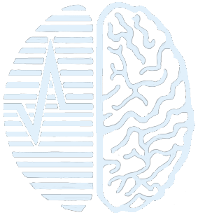

РОССИЙСКИЙ ЦЕНТР НЕВРОЛОГИИ И НЕЙРОНАУК
Russian Center of Neurology and Neuroscience
НЕЙРОПОЛИЯ
✅ Верно:
0
❌ Неверно:
0
🧠 Уровень:
—
Выбери уровень сложности
🟢 Лёгкий
🔵 Средний
🔴 Сложный
🧑⚕️ Вы:
1
/
30
🤖 Бот:
1
/30
🔄 Начать сначала
⚀
🎲 Бросить
Текст вопроса...
А
Вариант 1
Б
Вариант 2
В
Вариант 3
Г
Вариант 4
🏆
ПОБЕДА!
✅ Верно:
0
❌ Неверно:
0
🔄 Играть снова